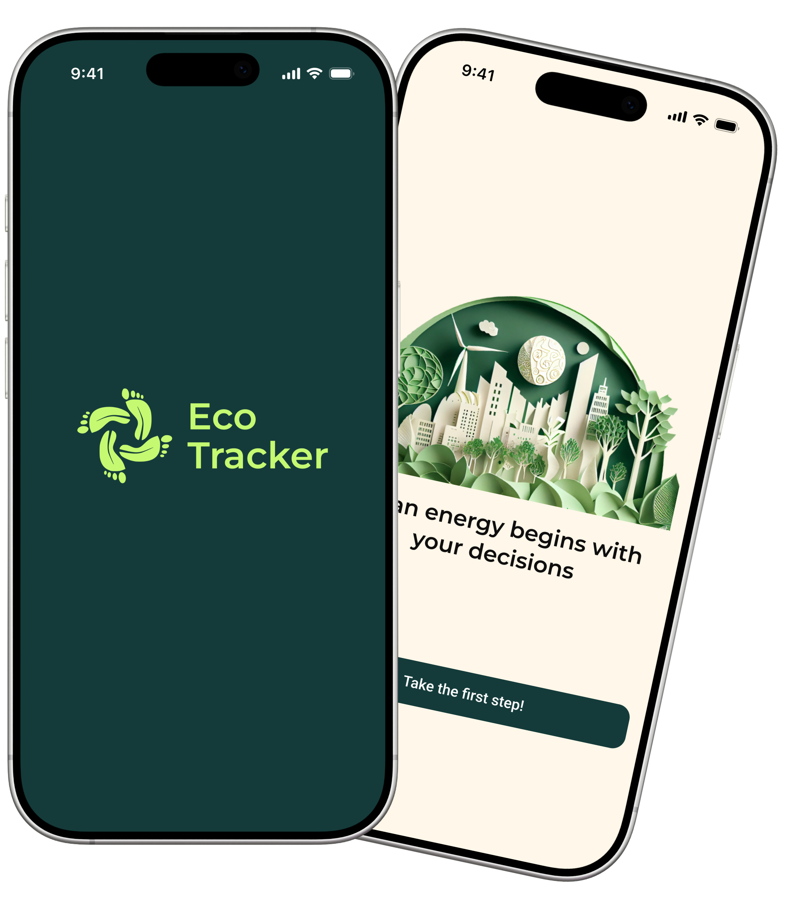
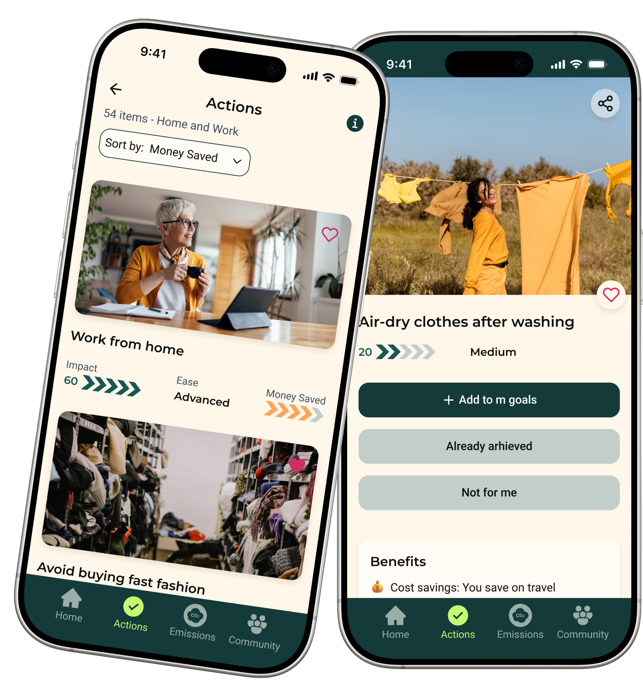
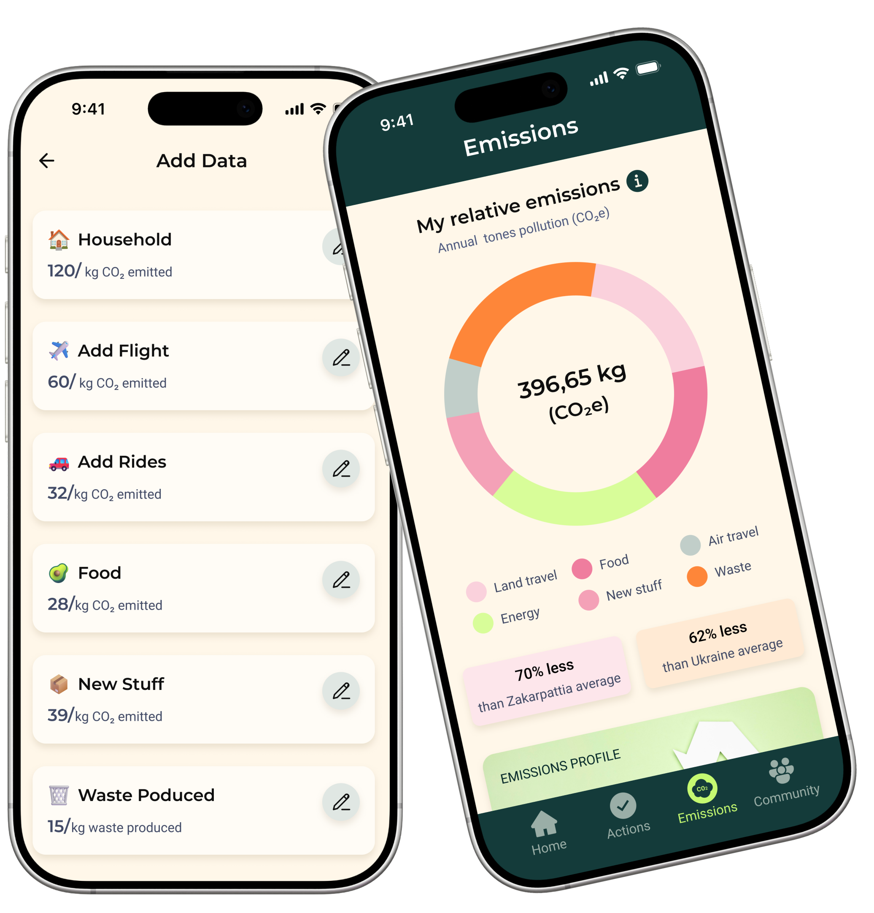
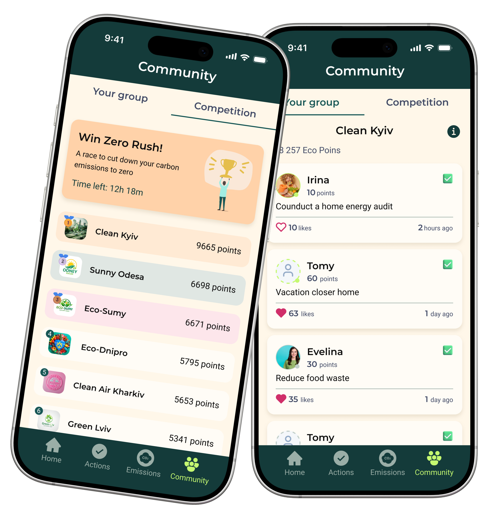

EcoTracker допомагає користувачам розуміти вплив своїх щоденних звичок на довкілля, відстежувати власний прогрес та отримувати персональні рекомендації для більш сталого способу життя.

EcoTracker мав допомагати людям зменшувати свій екологічний слід, але дослідження показало, що для більшості українців це не є достатньою мотивацією. Поведінку визначають повсякденні потреби, економічна ситуація та локальний контекст.
Мій інсайт: люди готові змінювати екологічні звички тоді, коли вони одночасно приносять особисту користь. Тому я переосмислила ціннісну пропозицію продукту: замість «рятуй планету» — екологічні дії, що допомагають ще й економити гроші.
Перед проєктуванням я проаналізувала три найпопулярніші еко-застосунки, щоб зрозуміти, які рішення вже працюють, а які потреби залишаються незакритими. Паралельно провела JTBD, CJM, User Flow та глибинні інтерв'ю, щоб перевірити ці висновки на українських користувачах.
Усі конкуренти добре вирішували окремі задачі: гейміфікацію, розрахунок CO₂ або спільноту. Але жоден не поєднував персональний вуглецевий слід, фінансову вигоду та локальний український контекст. Саме ця прогалина стала основою EcoTracker.
Щоб підвищити мотивацію, я спроєктувала екодії через призму особистої цінності. Замість лише екологічного ефекту користувач бачить фінансову вигоду, економію часу, вплив на здоров'я та свій внесок у довкілля, що допомагає легше приймати рішення й формувати нові звички.
Кожна дія структурована так, щоб рішення можна було прийняти за кілька секунд: користувач одразу бачить категорію, рівень складності, очікувану винагороду в екопоінтах і детальний опис користі. Це допомагає швидко знаходити релевантні дії та поступово інтегрувати екозвички у повсякденне життя.


Щоб зробити CO₂ зрозумілим, я спроєктувала розділ Emissions, де вуглецевий слід розкладається на знайомі сфери життя: дім, транспорт, перельоти, харчування, покупки та відходи. Замість абстрактної цифри користувач бачить, які саме звички формують його вплив.
Користувач може додавати дані по кожній категорії, переглядати загальний показник, динаміку змін і персональні поради. Це допомагає не просто побачити свій CO₂, а зрозуміти, що саме на нього впливає і де зміни дадуть найбільший ефект.
Щоб екозвички не залишалися індивідуальним наміром, я спроєктувала community-секцію як простір для спільної дії. Користувач може приєднатися до групи за містом або інтересом, бачити внесок інших учасників і відчувати, що його дії — частина спільного результату.
Усередині групи видно активність учасників, їхні дії та спільний прогрес. Окремо я додала рейтинг команд і челенджі між групами, щоб підтримувати мотивацію через причетність, командну динаміку та дружнє суперництво.

Провела конкурентний аналіз, JTBD, persona та user flow, щоб зрозуміти, як зробити екологічний продукт релевантним для українського користувача.
Спроєктувала інформаційну архітектуру, основні користувацькі сценарії та повний UI застосунку. Розробила дизайн-систему, бібліотеку компонентів і детальні макети для ключових функцій.
Сформувала продуктову логіку застосунку: визначила, як поєднати екологічну користь з особистою мотивацією користувача, які функції мають стати ядром продукту та як перетворити абстрактний CO₂-слід на зрозумілий досвід.
Я зрозуміла, що екологічний продукт не можна будувати лише навколо глобальної ідеї сталого розвитку. Щоб він працював в Україні, він має враховувати щоденні пріоритети користувача.
Я побачила, що екодії стають зрозумілішими й привабливішими, коли користувач одразу бачить власну вигоду — економію коштів, часу, користь для здоров'я та поступовий прогрес.
Екологічні звички легше формуються не наодинці. Спільні челенджі, прогрес інших користувачів і відчуття залученості допомагають довше зберігати мотивацію.